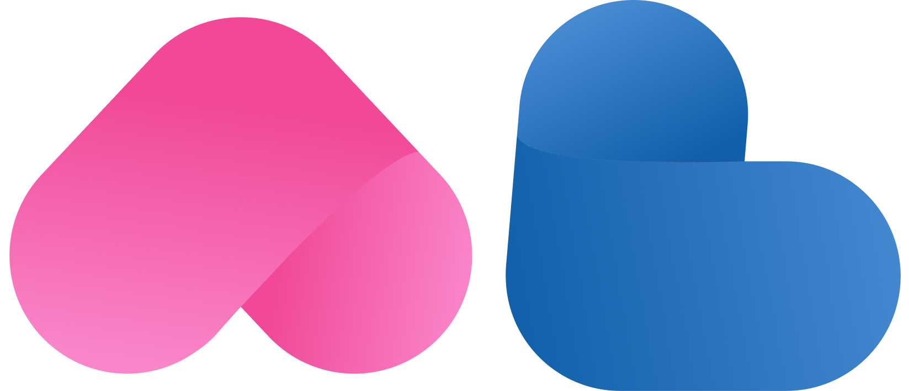
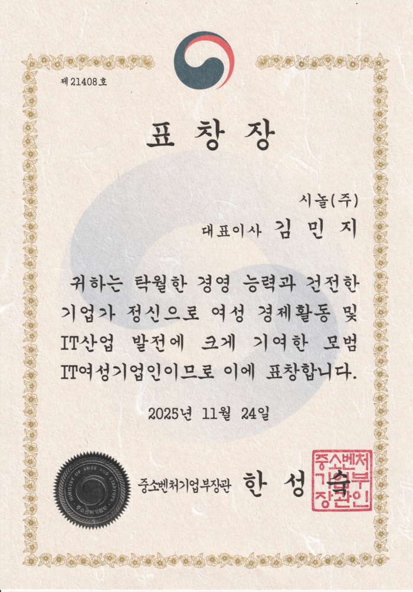

01 / OUR STORY
함께할 사람이 있으면,
오늘은 달라집니다.
우리가 연결하는 것은
장소보다, 사람입니다.
시놀은 50+가 취향과 관심사를 나누고, 새로운 관계를 이어가는 라이프스타일 기업입니다.
여행과 취미, 커뮤니티와 만남을 통해 일상 속 어울림을 만들어갑니다.
같이 걷는 이웃, 이야기를 나눌 친구, 마음이 통하는 인연.
특별한 날뿐 아니라 평범한 오늘에도 함께할 수 있도록.
 반가워요, 새로운 나! 함께라서 더 좋은 오늘
반가워요, 새로운 나! 함께라서 더 좋은 오늘우리가 연결하는 것은
장소보다, 사람입니다.
시놀은 50+가 취향과 관심사를 나누고, 새로운 관계를 이어가는 라이프스타일 기업입니다.
여행과 취미, 커뮤니티와 만남을 통해 일상 속 어울림을 만들어갑니다.
같이 걷는 이웃, 이야기를 나눌 친구, 마음이 통하는 인연.
특별한 날뿐 아니라 평범한 오늘에도 함께할 수 있도록.
시놀은 만남이 일상이 되고,
어울림이 계속되는 관계를 생각합니다.

시놀의 이름을 담은 심볼에는 사람과 사람이 이어지는 마음이 담겨 있습니다.
서로에게 기대고, 함께하는 시간을 나누는 관계.
시놀은 그 어울림을 응원합니다.
친구가 필요한 날부터
새로운 인연을 만나고 싶은 날까지.
좋아하는 일로 만나
일상을 나눌 친구를 찾으세요.
서로를 알아가는 즐거움.
마음이 통하는 만남을 시작하세요.
앞으로의 시간을 함께할
소중한 인연을 만나보세요.

시니어의 더 나은 일상을 향한 걸음.
시놀은 더 많은 연결을 만들어갑니다.
서울시 영등포구 의사당대로 83, 오투타워 8층
여의도역 3번 출구 · 주차 무료 30분, 이후 유료